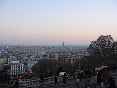
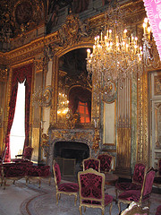
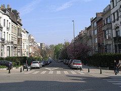
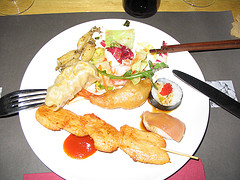
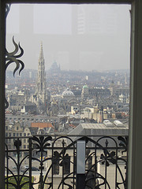
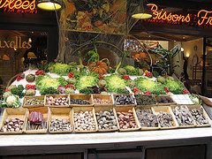
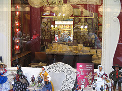
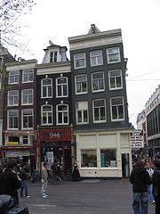
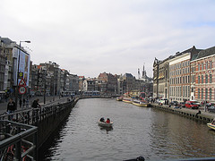

Čipka, suši, i belgijsko svetlo
Gost post: Allotta (još uvek bez bloga).
Ako mi je Akropolj ’95. ispao roze jer su mi prodali bajati film u rodnoj, ne ovoj, nego nekoj trećoj drzavi, onda je red, valjda, da Champs Elysès bude plave boje... Pariz je definitivno romantičan. Otišla sam bez ikakvih predrasuda i ubeđena da je globalizacija učinila svoje, te da ću biti, videti, slikati, pa šta sad... Au contraire! Iako sam se u pojedinim momentima probijala kroz neviđene gužve, osećaj je bio snažan, a to je da ću se vratiti, i da mi ni tada neće biti dosta... Osim savršenih zgrada, prelepih balkona sa kovanim gvožđem i metalnim prugastim šalonima, prijala mi je francuska nonšalantnost uzgajana u cafeima, pomalo otrcanim, i sunce koje je sijalo kao po porudžbini. Videćeš, reče mi kuma, čim uđemo u Francusku neće biti oblaka. Tako i bi.
A utisci: Šetnja Champs Elysès, i nekako. Trijumfalna kapija, i nekako. Ali pogled sa Montmartre-a i suton ispred Sacrè Coeur-a... To prvo veče, na Veliku Subotu, završili smo čekajući sat vremena ispred Entrecôte-a, restorana u samom centru, u kome služe samo jedno jelo. Nezanimljivo, moglo bi se pomisliti. Ali taj srednje pečeni biftek, sa najukusnijim sosom od senfa i pomfritom, neću lako zaboraviti. Da ne spominjem prijatne Francuskinje koje tu rade, i raznolikost kultura, evropskih i svetskih, koje je taj isti ujedinio u srcu Pariza. Večeru smo završili grabeći sorbet od malina iz jedne činije. Mmmm... Otišli ka našem jeftinom, digitalizovanom hotelu sa milion gostiju na jedno veče, i zaspali srećni. Sutradan, Uskršnja nedelja, Louvre, neverovatno putovanje. Obišla desetinu, pa planiram jedno dvanaest povrataka... Riberin Bosonogi dečak, njegov osmeh, cilj, da li je dečak uopšte, možda pripadnik monaškog reda... Videla Goyu. Take a glimps on Napoleonove odaje, tek što je elita ustala od stola, tu su i ćošku, vare punjenog fazana. I taj muzej tek, a pogled kroz prozor... U nekom ćošku dve Japanke, jedna sredovečna, jedna omlađa, spavaju sedećki, bez naslona. Veština, pomislih, a i dug je dan i put pred njima. Surovi roditelji dočepali se ovog čuda, guraju i vuku uspavanu i žednu decu kroz prastare slike i odaje. Sedimo u parku Luxemburg sa još 60 000 Francuza i turista koji su podigli noge i sunčaju se. Na sredini je jezero sa malim jedrenjacima koje klinci svih boja sa roditeljima svih boja odguruju štapovima. Primetih da su im parkovi uvek posuti sitnim makadamom i prašinom, što objašnjava zašto su Parižankama uvek musave cipele... Piknik ispod Ajfelove kule prethodnog dana takođe nezaboravan doživljaj. Odmornijih stopala iz parka smo otišli po doner kod nekog Turčina, odneli na Montmartre, seli na klupu i gledali u Pariz. Neki tip je na ćošku svirao harmoniku... Prošetali smo se i probijajući se do vrha brda gde smo planirali poslednju kaficu u Parizu za ovaj put. Mnogobrojni ulični slikari govore srpski, neki ne tako otvoreno, dok nas neki bivši zemljaci viču i vuku za rukav. Kako nas samo nanjuše... Ok, nešto sam i zaboravila. Od Pariza do Brisela autoputem ogovaramo našu gimnazijsku generaciju, može li bolje...
***
Sutradan, Amsterdam. Opis je kratak, kao i boravak. Arhitektura savršeno nesavršena. Pijemo kafu dijagonalno od Madam Tiso, šetamo kroz red light district. Kasno smo stigli da bismo ušli u Van Gogov muzej, a i bicikle nismo mogli da iznajmimo. Potpuna dekadencija, klinci sa crvenim kapcima, svi toliko opušteni da mi to po malo smeta. Trebala sam da dođem sa 18. Miševi na trotoaru, pored staze za šetnju postavljeni gvozdeni pisoari iz kojih zaudara. Kažem, bolje sa 18, ili već ući u neki cofee-shop, pa... Da uobličim moju Amsterdam priču, pauk je odneo auto sa solidno parkiranog mesta, al’ sve je za nauk. Iračanin koji govori srpski (studirao u Nišu?) nas upućuje u parking servis gde dajemo simboličnu svotu zaposlenima iza neprobojnog stakla. Stomak se opusti kada ugledamo jedinstvene bg table. Ajd’ kući u Brisel!
***
Ok, imala sam svest o tome da cu sesti u taj avion, i već predveče, koje savršeno kasno stiže, a mrak još kasnije, piti neku kaficu na jednom od najlepših trgova Evrope, i u samom centru EU, te ni u samim kolima nisam ni slutila kakav pljusak slika lepog i uređenog sveta me čeka... Možda nepravedno zanemaren, jer su prvi utisci i najjači, Brisel se lagano izborio za možda i prvo mesto na mojoj listi. Zato što je otvoren, ljudi sa svih strana, 200.000 zaposlenih pri EU, to je nešto! Ulice u centru su kaldrmisane, zebre napravljene kao mozaik od belih mermernih kockica, ne moraju da farbaju svaki čas... Glavni trg je Grand Place, ili Grand Markt na flamanskom. Prvo veče pijemo nešto na glavnom trgu. Pre toga dugo tražimo parking, praznik je i svi su došli da uživaju. Male kaldrmisane ulice prepune restorana, tematske su, po grčki, po turski. Omiljeno jelo Belgijanaca su dagnje sa pomfritom u kojima uživaju na krivim, klimavim stolovima u ulici Rue des Bouchers... Nisam probala. Sa ponekog ćoška mirišu waffle (flamanski), ili gauffre (francuski), belgijski ’bakin kolač’ sa raznoraznim prelivima, voćem, mmm,...... Prepuno turista takođe. Prvo veče se slikamo sa dečkom koji piški (manneken pis), simbolom Brisela. Kažu da je skulptura nastala kada je očajni otac izgubio sinčića u gradskoj vrevi, pa ga, baš na tom ćošku pronašao kako piški... Belgijanci ga oblače u razne nošnje i varijante. Prelepi izlozi u centru - prodavnice čokolade nadaleko poznate, belgijske čipke i suvenira. Prekidamo šetnju i vozimo se na spavanje kroz red light district. Iz auta slikam i slučajno čujemo cenu: ceo aranžman 40 eura. Posmatram ogromne srebrne zgrade namenjene raznim stanovnicima Evrope, polu ili četvrt popunjene, mnogo prostorija zvrji prazno. Tako blizu, a tako daleko, to je možda neka politička emocija koja me stalno pratila, no bolje da ne počinjem. I sramota, nigde najlonske kese, postah nostalgična...
U blizini stambnih zgrada jezerca po kojima plivaju razne ptice, zeleni parkovi u kojima spavuckaju neki koji su produžili pauzu za ručak. A vreme kao da sam naručila, kao početak leta. Malo, malo, osvežimo se belgijskim svetlim...
Za rastanak, veče u azijskom restoranu. Oduševio me suši sa sosom od rena, žablji batačići, hrskavo pohovani račić, pileći ražnjići. Za glavno jelo kombinacija povrća i lični izbor mesa koje će prekaljeni kineski kuvar baciti na žar i preliti sosom po izboru. Crveni kari sos začinio je moju morsku kombinaciju (lignje i račići, klice, brokoli, boranija, crvena paprika). Reših da ponesem još jedan ukus, piletinu i kineske pečurke sa klasičnim sosom (sita, al’ ajde). Probala liči, kinesko voće. Ne liči ni na šta poznato, kao da je malo parfemisano. Simpatčno.
***
Ajd’u stan, pakovanje. Petak 13, sa kojim sam se večno sprdala, uzvraća udarac. Aerodrom u Briselu štrajkuje. Stomak me secka, a kum rešava problem. U ranu zoru vozi me do Amsterdama. Pešačim oko 45 min od mesta čekiranja do gate-a. Jasno da je ovo bio moj prvi put na zapad Evrope.
Komentari
Vidi se da si "učiteljica"... koliko stilskih figura :) Kad ćeš bre da aktiviraš taj blog...
 RSS feed
RSS feed
 sadržaji se objavljuju pod
sadržaji se objavljuju pod
Fenomenalno.
Feisty | 30.04.07 16:17